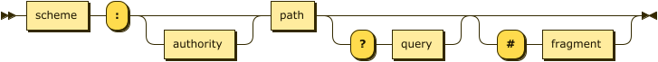
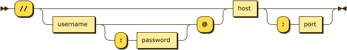

The http module provides HTTP protocol support for clients and servers. With a few lines of ObjectTalk an HTTP server can be setup to serve static and dynamic content based on specified routing rules. A class is also avaible to decompose and compose URLs which can also be used to download resources as a client.
The http.Url class provides support for URL parsing and resource downloading. The parser is compliant with RFC 1738 and understands the following syntax:
URL:

URL ::= scheme ":" authority? path ("?" query)? ("#" fragment)?
Authority:

authority ::= "//" (username (":" password)? "@")? host (":" port)?
To use the http.Url class to download resources, it is as simple as:
var http = import("http");
var url = http.Url("http://host.name/resource-path");
var content = url.download();
// or as a one-liner
var content = import("http").Url("http://host.name/resource-path").download();
Member Functions
| Function | Description |
|---|---|
| __init__(url) | Create a URL object form the provided string. |
| url() | Return the full URL as a string. Returns "" if not specified. |
| scheme() | Return the scheme part as a string. Returns "" if not specified. |
| authority() | Return the authority part as a string. Returns "" if not specified. |
| user() | Return the user part as a string. Returns "" if not specified. |
| password() | Return the password part as a string. Returns "" if not specified. |
| host() | Return the host part as a string. Returns "" if not specified. |
| port() | Return the port part as an integer. Returns 80 if not specified. |
| path() | Return the path part as a string. Returns "" if not specified. |
| directory() | Return the directory part of the path as a string. Returns "" if not specified. |
| filename() | Return the filename part of the path as a string. Returns "" if not specified. |
| stem() | Return the stem part of the filename as a string. Returns "" if not specified. |
| extension() | Return the extension part of the filename as a string. Returns "" if not specified. |
| query() | Return the query part as a string. Returns "" if not specified. |
| fragment() | Return the fragment part as a string. Returns "" if not specified. |
| hasParam(parameter) | Determines if the query part contains the specified parameter. |
| getParam(parameter) | Return the specified parameter as a string. Returns "" if not specified. |
| getParamWithDefault(parameter, default) | Return the specified parameter as a string. Returns provided default if not specified. |
| download() | Download the resource addressed by the URL and return it as a string. If something goes wrong, an exception is raised. |
| getStatus() | Return the HTTP status code from the last download request. |
The http.Server class instantiates a web server on a specified port using a specified request router. Those of you familiar with NodeJS or Python's Twisted Framework will probably recognize the inspiration for these ObjectTalk classes. In general, the ObjectTalk web server is a lot simpler as the aforementioned packages but the purpose of the ObjectTalk classes is not to compete buth rather to educate and provide simple solution to non-complex problems.
As an example, here is a simple "Hello World" web server in ObjectTalk. It runs on port 80 and responds with "Hello World" to every HTTP GET request on all URLs.
var http = import("http");
var router = http.Router()
.get("*", function(req, res, next) {
res.send("Hello World");
});
var server = http.Server(router).listen("0.0.0.0", 80);
os.runServer();
The http.Server server uses a request router to process all incoming requests. The listen member function starts the server on the speficied port using the specified host. In the example above, requests can come from any host.
The http.Server class does not have its own event loop. If a server is running from the command line, an event loop must be created using the os.runServer(); command as in the example above. If the server in running in a GUI application (yes, that's possible), you don't have to do anything as every GUI appication already has an event loop. By not including an event loop in the http.Server class, the possibility exists to run multiple network servers in a single ObjectTalk instance.
Member Functions
| Function | Description |
|---|---|
| __init__(router) | Create an HTTP server using the specified HTTP Router for processing requests. |
| listen(host, port) | Start the HTTP server using the specified host and port specification. |
The http.Router class provides routing mechanisms to let a web server's endpoints (URLs) respond to client requests. Routing is achieved by using methods of the http.Router class. For instance, http.Router.get handles an HTTP GET request and http.Router.post handles an HTTP POST request. You can find a list below of all the request types. You can also use http.Router.all to handle all HTTP methods and use http.Router.use to specify middleware as the callback function.
All routing methods specify a callback function (sometimes called “handler functions”) called when the web server receives a request to the specified route (endpoint) and HTTP method. In other words, the web server “listens” for requests that match the specified route(s) and method(s), and when it detects a match, it calls the specified callback function.
The following code is an example of a very basic route:
var http = import("http");
var router = http.Router();
// respond with "Hello World" when a GET request is made to the homepage
router.get("/", function(req, res, next) {
res.send("Hello World");
});
Route Methods
A route method is derived from one of the HTTP methods, and is attached to an instance of the http.Router class. The following code is an example of routes that are defined for the GET and the POST methods to the root of the web server.
// GET method route
router.get("/", function(req, res, next) {
res.send("GET request to the homepage");
});
// POST method route
router.post("/", function(req, res, next) {
res.send("POST request to the homepage");
});
The http.Router class supports methods that correspond to all HTTP request methods: get, post, and so on. For a full list, see below. There is a special routing method, http.Router.all, used to load middleware functions at a path for all HTTP request methods. For example, the following handler is executed for requests to the route "/secret" whether using GET, POST, PUT, DELETE, or any other HTTP request method.
router.all("/secret/*", function(req, res, next) {
print("Accessing the secret section ...");
next(); // pass control to the next handler
});
Route Paths
Route paths, in combination with a request method, define the endpoints at which requests can be made. Route paths can be strings, string patterns, or regular expressions. In case the pattern is a string, the pattern will only match if the string and path are identical.
// matches root route
router.get("/", function(req, res, next) {
res.send("root");
});
// matches /about route
router.get("/about", function(req, res, next) {
res.send("about");
});
// matches /random.text route
router.get("/random.text", function(req, res, next) {
res.send("random.text");
});
A string pattern ends with a * character (the wild card) and all paths that start with the same character sequence
// matches all paths that start with "/secret/"
router.all("/secret/*", function(req, res, next) {
res.send("in secret area");
});
Path matching based on regular express is still on the TODO list.
Route Parameters
Route parameters are named URL segments that are used to capture the values specified at their position in the URL. The captured values are populated in the req object, with the name of the route parameter specified in the path as their respective keys.
Route path: /users/:userId/books/:bookId
Request URL: http://localhost:3000/users/34/books/8989
req.getParams(): { "userId": "34", "bookId": "8989" }
To define routes with route parameters, simply specify the route parameters in the path of the route as shown below.
router.all("/users/:userId/books/:bookId", function(req, res, next) {
res.send(req.params);
});
Route Handlers
A route handler or callback is a function that must accept three parameters: req(uest), res(pond) and next. The first is the request object (which is an instance of http.Request) containing details about the request. The second is the respond object (which is an instance of http.Respond) which is used to tell the web server what to send back. The third is the next object which must be executed to pass the request to the next route handler.
Static Handler
To serve static content, a static handler can be attached to a route. This handler matches the start of a URL path to a filesystem path. This makes it quick to serve up hierarchies of files using a UNIX mount style approach.
// serve up the contents of the local 'static' directory under the /static HTTP path
router.static("/static", __DIR__.join("static"));
The static handler protects against con-artist that try to escape from the specified directory by using ".." path segments.
Timer Handler
The http.Router class also provides a timer handler which is called at a specified interval. This can be useful for dynamic web servers that have to update state after certain time intervals.
// run function every 10 seconds
router.timer(10000, function() {
// update state
});
Member Functions
| Function | Description |
|---|---|
| use(handler) | Respond to all HTTP request. |
| all(path, handler) | Respond to all HTTP methods for specified path. |
| get(path, handler) | Respond to HTTP GET methods for specified path. |
| put(path, handler) | Respond to HTTP PUT methods for specified path. |
| post(path, handler) | Respond to HTTP POST methods for specified path. |
| delete(path, handler) | Respond to HTTP DELETE methods for specified path. |
| static(path, ospath) | Mount specified OS path at specified URL path. |
| timer(interval, callback) | Call specified callback after specified interval (in milliseconds). |
The http.Request class contains information on the current HTTP request and it's passed to a route handler by the http.Router.
Member Functions
| Function | Description |
|---|---|
| getMethod() | Return the request's HTTP method. |
| getURL() | Return the request's URL. |
| getPath() | Return the request's path. |
| getVersion() | Return the HTTP protocol version. |
| hasHeader(name) | Determine if specified header was provided by client. |
| headerIs(name, value) | Determine if specified header has specified value. |
| getHeader(name) | Return specified header as a string. Returns "" if not found. |
| getHeaders(name) | Return all headers as a dictionary. |
| hasParam(name) | Determine if specified parameter was provided by client. |
| getParam(name) | Return specified parameter as a string. Returns "" if not found. |
| getParams(name) | Return all parameters as a dictionary. |
| hasCookie(name) | Determine if specified cookie was provided by client. |
| getCookie(name) | Return specified cookie as a string. Returns "" if not found. |
| getBody() | Return body of request as string. |
The http.Response class provides an interface to respond to HTTP requests and it's passed to a route handler by the http.Router.
Member Functions
| Function | Description |
|---|---|
| setStatus(status) | Set the HTTP respose status. |
| setHeader(name, value) | Set the value of a specified HTTP respose header. |
| hasHeader(name) | Determine if a specified HTTP respose header is already set. |
| end() | End the response. Useful for empty responses. |
| send(text) | Send the specified response to the client. |
| sendJson(json) | Send the specified JSON text to the client. |
| sendFile(filepath) | Send the specified file to the client. |
| sendFileToDownload(filepath) | Send the specified file to the client's download folder. |